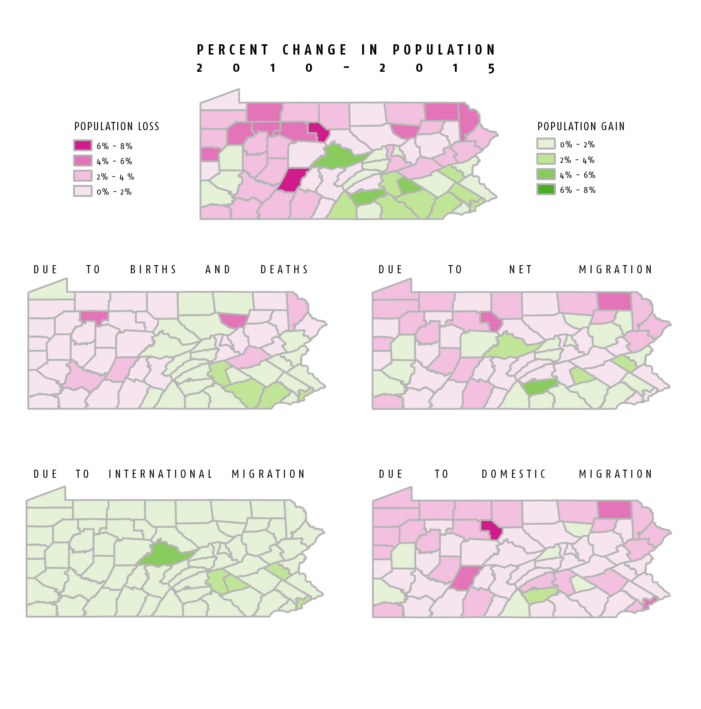

Some Representations of Data
This chart shows historical trends from 2010 to 2015 in the change in population by county in Pennsylvania. Only a section of counties are shown here: the first ten, alphabetically, as well as Philadelphia County, and the two counties with the largest positive and negative population growth in 2015, Cumberland County and Sullivan County (accordingly).
Even from this abbreviated example, one can see that the rate of population change in Pennsylvania counties seems to have become increasingly disperate as time progressed. In 2010, the rate of population change in these counties was more similar than that in 2015, which one can see graphically as the lines on become increasingly spread out towards the right of the chart.

These maps also examine population change at the county level, representing change between 2010 and 2015. The next step is to correlate them/present them side by side with election maps, as a means to see if there is any relationship between the two.
The top map shows that most population growth is concentrated in the southeast corridor of the state. However, what is perhaps surprising it that the counties that are growing the most quickly (as a proportion of their population) are not Allegany and Philadelphia Counties, but rather Center County, home of Penn State); Cumberland County, bordering Harriburg on the east, and Lebanon County, which sits betweeen the cities Harrisburg, Lancaster, and Reading.
The lower maps interrogate the sources of population change. We can see that birth rates and death rates favor population gains in southeastern and central-eastern parts of the state. Another observation is that Pennsylvania's population loss would be far worse without internaional migrants. Many counties have more residents leaving for elsewhere in the US than arriving, with the exception of the growing rural-suburban-urban (but not entirely urban) counties in the mid-southeast part of the state, such as Cumberland and Lebanon counties. Of particular note is the relatively high loss of residents in Philadelphia.